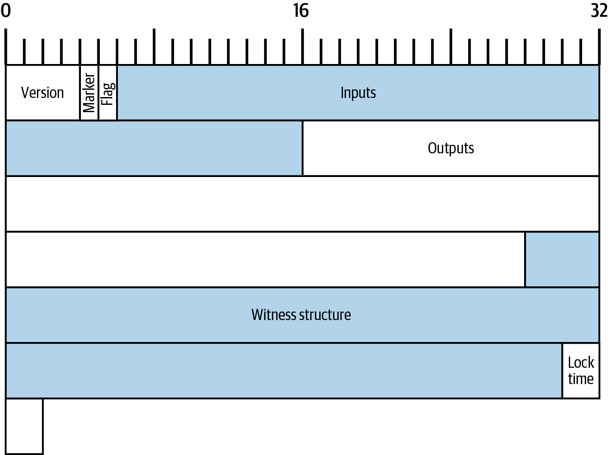
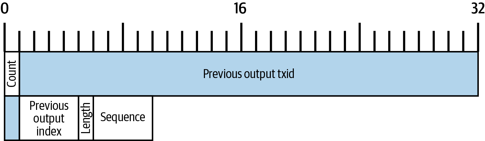
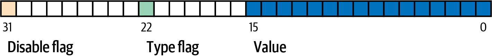
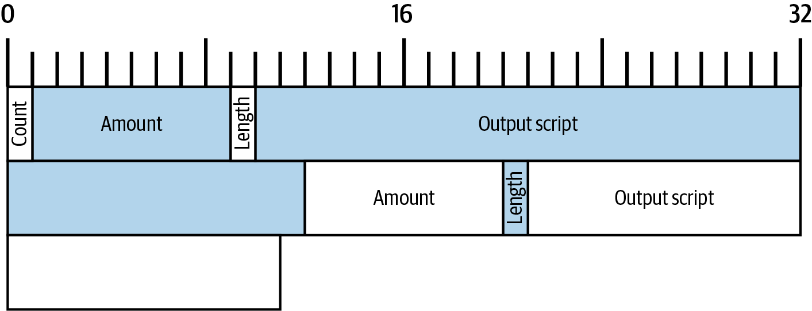
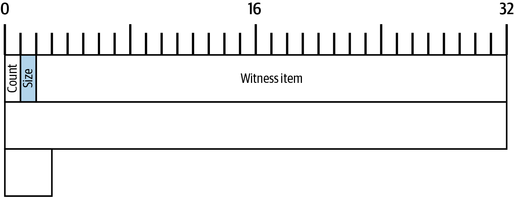
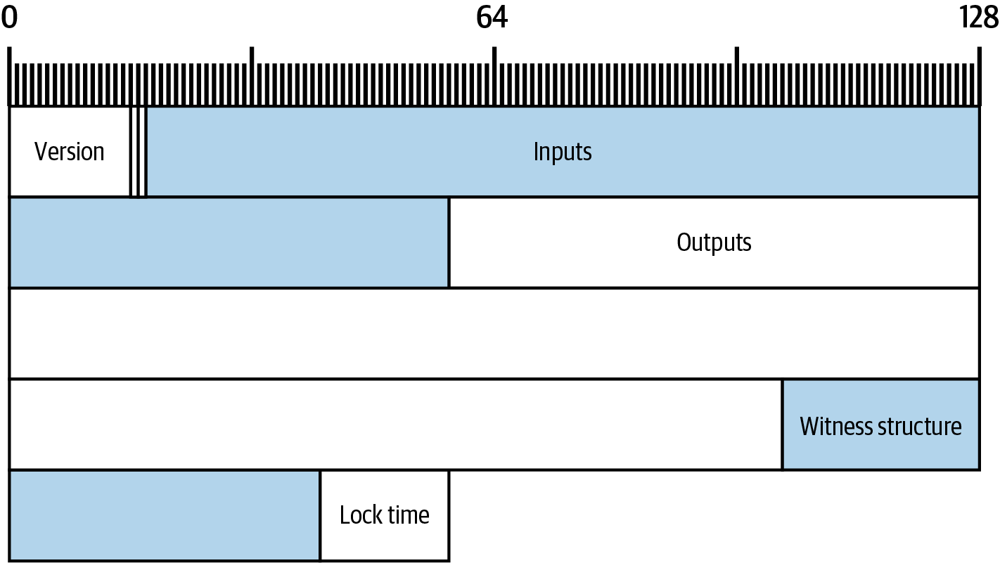

交易
我们日常转移实物现金的方式，与转移比特币的方式几乎毫无相似之处。实物现金是一种不记名凭证。Alice 通过把若干凭证（例如一些美元钞票）递给 Bob，从而完成支付。相比之下，bitcoin 既不以实物形式存在，也不以数字数据的形式存在——Alice 既不能把一些 bitcoin 递给 Bob，也不能通过邮件把它们发送出去。
不妨换个角度，想想 Alice 怎样把一块土地的控制权转给 Bob。她无法亲手把土地拎起来递给 Bob。实际上，存在某种记录（通常由当地政府维护），用来描述 Alice 拥有的这块土地。Alice 通过说服政府更新这条记录，标明这块土地现在归 Bob 所有，从而完成转让。
Bitcoin 的工作方式与此类似。每个 Bitcoin 全节点上都存在一个数据库，记录 Alice 控制着若干 bitcoin。Alice 通过说服全节点更新它们的数据库，将她的部分 bitcoin 标记为由 Bob 控制，从而完成支付。Alice 用来说服全节点更新其数据库的数据，被称为 交易（transaction）。这个过程并不直接使用 Alice 或 Bob 的身份信息，正如我们将在 [c_authorization_authentication] 中看到的那样。
本章中我们将拆解一个 Bitcoin 交易，并逐一考察它的各个部分，看看它们如何以一种富有表达力且极其可靠的方式促成价值的转移。
序列化的 Bitcoin 交易
在 [exploring_and_decoding_transactions] 中，我们启用了 Bitcoin Core 的 txindex 选项，用以获取 Alice 向 Bob 付款的那笔交易的副本。我们再次取出包含那次付款的交易，如 Alice 的序列化交易 所示。
$ bitcoin-cli getrawtransaction 466200308696215bbc949d5141a49a41\ 38ecdfdfaa2a8029c1f9bcecd1f96177 01000000000101eb3ae38f27191aa5f3850dc9cad00492b88b72404f9da13569 8679268041c54a0100000000ffffffff02204e0000000000002251203b41daba 4c9ace578369740f15e5ec880c28279ee7f51b07dca69c7061e07068f8240100 000000001600147752c165ea7be772b2c0acb7f4d6047ae6f4768e0141cf5efe 2d8ef13ed0af21d4f4cb82422d6252d70324f6f4576b727b7d918e521c00b51b e739df2f899c49dc267c0ad280aca6dab0d2fa2b42a45182fc83e81713010000 0000
Bitcoin Core 的序列化格式之所以特殊，是因为它既用于对交易做出承诺（commitment），也用于在 Bitcoin 的 P2P 网络上中继交易；不过其他程序也可以使用不同的格式，只要传输相同的数据即可。然而 Bitcoin Core 的格式在传输这些数据时相当紧凑且易于解析，因此许多其他 Bitcoin 程序也使用这种格式。
|
据我们所知，唯一一种被广泛使用的另一种交易序列化格式，是部分签名的 bitcoin 交易（partially signed bitcoin transaction, PSBT）格式，由 BIP174 和 BIP370 定义（其扩展由其他若干 BIP 描述）。PSBT 允许不受信任的程序生成交易模板，由具有所需私钥或其他敏感数据的受信任程序（例如硬件签名设备）来校验和填充该模板。为了实现这一点，PSBT 允许保存大量与交易相关的元数据，使其远不如标准序列化格式紧凑。本书不会详细介绍 PSBT，但我们强烈建议计划支持多密钥签名的钱包开发者使用它。 |
Alice 的序列化交易 中以十六进制显示的交易，在 Alice 交易的字节图 中以字节图的形式重新呈现。请注意，显示 32 字节需要用 64 个十六进制字符。该图只展示了顶层字段。我们将按它们在交易中出现的顺序逐一考察，并描述它们所包含的其他字段。

版本（Version）
一个序列化 Bitcoin 交易的前 4 个字节是它的版本号。Bitcoin 交易最初的版本是版本 1（0x01000000）。Bitcoin 中的所有交易都必须遵循版本 1 交易的规则，本书贯穿始终描述了其中的许多规则。
版本 2 的 Bitcoin 交易是在 BIP68 软分叉修改 Bitcoin 共识规则时引入的。BIP68 对 sequence 字段施加了额外约束，但这些约束只适用于版本号为 2 或更高的交易。版本 1 的交易不受影响。BIP112 与 BIP68 属于同一次软分叉，它升级了一个操作码（OP_CHECKSEQUENCEVERIFY）：在版本号小于 2 的交易中执行该操作码时，现在会失败。除了这两项改动，版本 2 交易与版本 1 交易完全相同。
截至本书撰写时，开始使用版本 3 交易的提案正在被广泛讨论。该提案并不打算修改共识规则，而只是修改 Bitcoin 全节点用于中继交易的策略。在该提案中，版本 3 交易将受到额外约束，以防止某些拒绝服务（DoS）攻击，我们将在 [transaction_pinning] 中作更深入的讨论。
扩展 Marker 与 Flag
示例序列化交易中接下来的两个字段，是作为隔离见证（segregated witness，SegWit）软分叉对 Bitcoin 共识规则改动的一部分新增的。规则改动定义在 BIP141 与 BIP143 中，而 扩展序列化格式（extended serialization format） 则定义在 BIP144 中。
如果交易包含 witness 结构（我们将在 Witness 结构 中描述），那么 marker 必须为零（0x00），flag 必须为非零。在当前的 P2P 协议中，flag 应当始终为 1（0x01）；其他取值的 flag 保留给后续协议升级使用。
如果交易不需要 witness 栈，则不得包含 marker 与 flag 字段。这与 Bitcoin 最初版本的交易序列化格式兼容，该格式现在被称为 legacy 序列化（legacy serialization）。详情请参见 Legacy 序列化。
在 legacy 序列化中，marker 字节会被解读为输入的数量（零）。但是一笔交易不可能有零个输入，所以 marker 实际上向现代程序发出信号，表明正在使用扩展序列化。flag 字段提供了类似的信号，同时也简化了未来更新序列化格式的过程。
输入（Inputs）
输入字段还包含若干其他字段，因此我们先在 Alice 交易输入字段的字节图 中给出这些字节的映射图。

交易输入列表的长度
交易输入列表以一个整数开头，表示交易中输入的数量。其最小值为 1。没有显式的最大值，但是对交易最大体积的限制实际上把交易的输入数量限制在几千个以内。这个数字采用 compactSize 无符号整数进行编码。
交易中的每个输入都必须包含三个字段：一个 outpoint 字段、一个带长度前缀的 input script（输入脚本） 字段，以及一个 sequence 字段。
我们将在接下来的小节中逐一介绍这些字段。某些输入还包含一个 witness 栈，但它被序列化在交易的末尾，因此我们将在后面再讨论。
Outpoint
Bitcoin 交易是对全节点的一个请求，要求它们更新关于 coin 所有权信息的数据库。为了让 Alice 将她的部分 bitcoin 控制权转给 Bob，她首先需要告诉全节点如何找到她当初收到这些 bitcoin 的那次先前转账。由于 bitcoin 的控制权是在交易输出中分配的，Alice 使用一个 outpoint 字段来 指向 之前的 输出。每个输入都必须包含一个 outpoint。
outpoint 中包含一个 32 字节的 txid，对应于 Alice 当初收到她现在想花费的 bitcoin 的那笔交易。该 txid 使用 Bitcoin 哈希的内部字节序；参见 内部与显示字节序。
由于一笔交易可能包含多个输出，Alice 还需要指明使用该交易中具体哪一个输出，这个值称为 output index（输出索引）。输出索引是 4 字节的无符号整数，从零开始计数。
当全节点遇到一个 outpoint 时，它会根据该信息尝试找到所引用的输出。全节点只需要查看区块链中更早的交易。例如，Alice 的交易被包含在第 774,958 号区块中。验证她的交易的全节点只会在该区块及更早的区块中查找她的 outpoint 所引用的先前输出，而不会查找更晚的区块。在第 774,958 号区块内，它们只会查看在 Alice 的交易之前出现在该区块中的交易（顺序由区块 merkle 树叶子的顺序决定，参见 [merkle_trees]）。
找到该先前输出后，全节点会从中获取几条关键信息：
-
分配给该先前输出的 bitcoin 数量。所有这些 bitcoin 都将在本次交易中被转移。在示例交易中，先前输出的金额为 100,000 satoshi。
-
该先前输出的授权条件。这些是花费该先前输出所分配的 bitcoin 时必须满足的条件。
-
对于已确认的交易，还有确认它的区块高度以及该区块的 median time past（MTP）。这是相对时间锁（参见 Sequence 作为共识强制的相对时间锁）以及 coinbase 交易输出（参见 Coinbase 交易）所需要的。
-
证明该先前输出确实存在于区块链中（或者作为已知的未确认交易存在），并且尚未被其他任何交易花费。Bitcoin 的共识规则之一禁止任何输出在合法的区块链中被花费超过一次。这就是关于 双花（double spending） 的规则：Alice 不能在两笔不同的交易中分别用同一个先前输出向 Bob 和 Carol 付款。两笔都试图花费同一个先前输出的交易被称为 冲突交易（conflicting transactions），因为合法的区块链中只能包含其中之一。
不同全节点实现在不同时期尝试过追踪先前输出的不同方法。Bitcoin Core 目前使用的方案被认为是在保留所有必要信息的同时尽可能减少磁盘空间方面最有效的：它维护一个数据库，存储每一个 UTXO 及其基本元数据（如确认它的区块高度）。每当有一个新的交易区块到来时，所有它们花费的输出都会被从 UTXO 数据库中移除，所有它们创建的输出都会被加入该数据库。
输入脚本（Input Script）
input script 字段是 legacy 交易格式的遗留产物。我们示例交易的输入花费的是一个原生（native）segwit 输出，不需要在 input script 中放置任何数据，因此 input script 的长度前缀被设为零（0x00）。
作为一个带长度前缀的 input script 花费 legacy 输出的例子，我们从本书撰写时最近一个区块中任取一笔交易：
6b483045022100a6cc4e8cd0847951a71fad3bc9b14f24d44ba59d19094e0a8c fa2580bb664b020220366060ea8203d766722ed0a02d1599b99d3c95b97dab8e 41d3e4d3fe33a5706201210369e03e2c91f0badec46c9c903d9e9edae67c167b 9ef9b550356ee791c9a40896
长度前缀是一个 compactSize 无符号整数，表示序列化 input script 字段的长度。在本例中，它是单个字节（0x6b），表示 input script 长度为 107 字节。我们将在 [c_authorization_authentication] 中详细介绍如何解析和使用脚本。
Sequence
输入的最后 4 个字节是它的 sequence 号。这个字段的用途和含义随时间发生过变化。
最初的基于 sequence 的交易替换
sequence 字段最初设计用来允许创建同一笔交易的多个版本，较晚的版本会替换较早的版本作为待确认候选。sequence 号用于跟踪交易的版本。
例如，设想 Alice 和 Bob 想要就一局纸牌游戏打赌。他们首先各自签署一笔交易，将一些钱存入一个输出，该输出的脚本要求双方的签名才能花费，即 多重签名（multisignature） 脚本（简称 multisig）。这被称为 setup transaction（建立交易）。然后他们创建一笔花费该输出的交易：
-
该交易的第一个版本，nSequence 为 0（0x00000000），将双方最初存入的钱原数退还给 Alice 和 Bob。这被称为 refund transaction（退款交易）。此时他们都不会广播退款交易。只有出问题时才会用到它。
-
Alice 赢了纸牌游戏的第一轮，于是该交易的第二个版本（sequence 为 1）增加给 Alice 的金额，减少 Bob 的份额。两人都对更新后的交易签名。同样地，除非出问题，他们不需要广播这个版本。
-
Bob 赢了第二轮，于是 sequence 增至 2，减少 Alice 的份额，增加 Bob 的份额。他们再次签名但不广播。
-
在 sequence 不断递增、资金不断重新分配、生成的交易被签名但不广播的多轮之后，他们决定最终敲定这笔交易。他们生成一笔反映最终资金分配的交易，把 sequence 设为最大值（0xffffffff），从而最终敲定这笔交易。他们广播这个版本的交易，它在网络上被中继，最终被矿工确认。
如果我们考虑一些备选场景，就能看到基于 sequence 的替换规则是如何起作用的：
-
设想 Alice 广播了 sequence 为 0xffffffff 的最终交易，然后 Bob 又广播了某个较早的、他自己份额更高的版本。由于 Bob 那个版本的交易 sequence 较低，使用 Bitcoin 原始代码的全节点不会把它中继给矿工，使用原始代码的矿工也不会去挖它。
-
在另一种场景下，设想 Bob 在 Alice 广播最终版本之前几秒钟广播了一个较早版本的交易。节点会中继 Bob 的版本，矿工也会尝试去挖它；但当 Alice 的具有更高 sequence 号的版本到达时，节点也会中继它，使用原始 Bitcoin 代码的矿工会转而尝试挖 Alice 的版本而非 Bob 的版本。除非 Bob 走运、在 Alice 的版本到达之前就挖出了一个区块，否则最终被确认的将是 Alice 的版本。
这种协议就是我们如今所说的 payment channel（支付通道）。在一封据信出自 Bitcoin 创始人之手的邮件中，他将这些称为 高频交易（high-frequency transactions），并描述了为支持它们而加入协议的若干特性。我们稍后会学习其中一些特性，也会看到支付通道的现代版本如今在 Bitcoin 中越来越被广泛使用。
纯粹基于 sequence 的支付通道存在一些问题。第一个问题是，用更高 sequence 的交易替换更低 sequence 的交易的规则只是软件策略层面的事情。矿工并没有任何直接的激励去偏好某个版本胜过另一个版本。第二个问题是，先广播交易的一方可能因为运气好而让自己的交易被确认，即便它并不是 sequence 最高的那一版。一个有几个百分点失败概率（仅仅因为运气不佳）的安全协议算不上一个非常有效的协议。
第三个问题是，可以用一笔交易的不同版本无限次地替换之前的版本。每次替换都会消耗网络上所有中继全节点的带宽。例如，截至本书撰写时，约有 50,000 个中继全节点；攻击者每分钟创建 1,000 笔大小为 200 字节的替换交易，会消耗他自己约 20 KB 的带宽，但每分钟消耗全节点网络约 10 GB 的带宽。除了 20 KB/分钟带宽的成本，以及交易被确认时偶尔需要支付的费用之外，攻击者无需为自己施加给全节点运营者的巨大负担付出任何代价。
为了消除这种攻击风险，最初这种基于 sequence 的交易替换在 Bitcoin 软件早期版本中被禁用了。在长达数年的时间里，Bitcoin 全节点不允许一笔未确认交易（按其 outpoint 标识的某个特定输入）被另一笔包含相同输入的交易替换。然而，这种情形并未一直持续。
Opt-in 交易替换信号
在最初的基于 sequence 的交易替换因可能被滥用而被禁用之后，有人提出了一个解决方案：在 Bitcoin Core 和其他中继全节点软件中编程，允许一笔支付更高交易费率的交易替换一笔支付较低费率的冲突交易。这就是所谓的 replace by fee（按费率替换），简称 RBF。一些用户和企业反对在 Bitcoin Core 中重新引入交易替换支持，于是达成了一个折中方案，再次借助 sequence 字段来支持替换。
按照 BIP125 的描述，任何一笔未确认交易，只要其中有任意一个输入的 sequence 被设置为低于 0xfffffffe 的值（即至少比最大值小 2），就向网络发出信号，表明其签名者希望它能被支付更高费率的冲突交易替换。Bitcoin Core 允许这类未确认交易被替换，对其他未确认交易则继续禁止替换。这使得反对替换的用户和企业可以简单地忽略包含 BIP125 信号的未确认交易，直到它们被确认。
除了费率和 sequence 信号之外，现代交易替换策略还有更多内容，我们将在 [rbf] 中看到。
Sequence 作为共识强制的相对时间锁
在 版本（Version） 中我们了解到，BIP68 软分叉为版本号为 2 或更高的交易增加了一个新约束。该约束作用于 sequence 字段。
sequence 值小于 231 的交易输入被解释为带有相对时间锁。这样的交易只有当其先前输出（由 outpoint 引用）已经经历了与相对时间锁数量相等的"年龄"之后，才能被纳入区块链。例如，某笔交易的一个输入带有 30 个区块的相对时间锁，那么它只能被包含在这样的区块中：该区块与同一条区块链上包含其所花费输出的那个区块之间至少相隔 29 个区块。由于 sequence 是按输入设置的字段，一笔交易可以包含任意数量的带时间锁的输入，所有这些输入都必须达到足够的"年龄"，交易才有效。一个禁用标志位允许一笔交易同时包含带相对时间锁（sequence < 231）的输入和不带相对时间锁（sequence ≥ 231）的输入。
sequence 值既可以以区块为单位，也可以以秒为单位指定。一个类型标志位（type-flag）用于区分以区块计数和以秒计时。类型标志位设置在第 23 个最低有效位（即值为 1<<22）。如果类型标志位被设置，则 sequence 值被解释为 512 秒的倍数；否则被解释为区块数。
当把 sequence 解释为相对时间锁时，只考虑最低的 16 位。在评估完标志位（第 32 位和第 23 位）后，sequence 值通常会被一个 16 位掩码"屏蔽"（例如 sequence & 0x0000FFFF）。512 秒的倍数大致等于区块之间的平均时间间隔，因此 16 位（216）能表示的最大相对时间锁，无论是以区块还是以秒计，都略多于一年。
BIP68 定义的 sequence 编码（来源：BIP68） 展示了 BIP68 定义的 sequence 值的二进制布局。

请注意，任何使用 sequence 设置了相对时间锁的交易，同时也会发出 opt-in replace by fee 的信号，如 Opt-in 交易替换信号 中所述。
输出（Outputs）
交易的输出字段包含与具体输出相关的若干字段。与输入字段一样，我们也先来看示例交易（Alice 向 Bob 付款）中输出字段的具体字节，以字节图的形式显示在 Alice 交易输出字段的字节图 中。

输出数量（Outputs Count）
与交易输入部分的开头相同，输出字段以一个计数开头，表示这笔交易中的输出数量。它是一个 compactSize 整数，必须大于零。
示例交易有两个输出。
金额（Amount）
具体输出的第一个字段是它的 amount（金额），在 Bitcoin Core 中也称为 "value"。它是一个 8 字节的有符号整数，表示要转移的 satoshi 数量。satoshi 是 Bitcoin 链上交易中可表示的最小 bitcoin 单位。1 个 bitcoin 等于 1 亿个 satoshi。
Bitcoin 的共识规则允许一个输出的金额最小为零，最大为 2,100 万个 bitcoin（即 2.1 千万亿 satoshi）。
不经济输出与被禁止的尘埃
尽管零值输出本身没有任何价值，它仍然可以按照与其他输出相同的规则被花费。然而，花费一个输出（即把它作为某笔交易的输入）会增加交易的体积，从而增加需要支付的手续费。如果该输出的价值小于所需额外手续费，那么花费这个输出在经济上就不划算。这类输出被称为 不经济输出（uneconomical outputs）。
零值输出始终是不经济输出；即便花费它的交易的费率为零，它也不会给该交易增加任何价值。然而，许多其他价值较低的输出也可能是不经济的，甚至是无意造成的。例如，在当前网络的典型费率下，某个输出给交易带来的价值可能高于花费它的成本——但明天费率可能上涨，使这个输出变得不经济。
如 Outpoint 中所述，全节点需要追踪所有 UTXO，这意味着每个 UTXO 都会让运行全节点稍微更困难一些。对于包含较多价值的 UTXO，最终花费它们存在经济激励，所以它们不构成问题。但是控制一个不经济 UTXO 的人没有任何花费它的激励，这可能使其成为全节点运营者永久的负担。由于 Bitcoin 的去中心化依赖于许多人愿意运行全节点，包括 Bitcoin Core 在内的若干全节点实现通过影响未确认交易中继和挖矿的策略，来抑制不经济输出的产生。
针对不中继或不挖矿创建新不经济输出的交易的策略，被称为 dust（尘埃） 策略，这是把价值非常小的输出比喻为非常小的微粒。Bitcoin Core 的 dust 策略相当复杂，包含若干随意选取的数字，因此我们所知的许多程序简单地认为小于 546 satoshi 的输出就是尘埃，默认情况下不会被中继或挖矿。偶尔会有降低 dust 限额的提案以及提高它的反提案，因此我们建议使用预签名交易或多方协议的开发者检查策略自本书出版以来是否发生了变化。
|
自 Bitcoin 诞生以来，每个全节点都需要保存每个 UTXO 的副本，但这种情况可能不会永远如此。几位开发者一直在开发 Utreexo 项目，它允许全节点存储对 UTXO 集合的承诺，而不存储数据本身。一个最小承诺可能只有一两 KB 大小——对比一下截至本书撰写时 Bitcoin Core 所存储的超过 5 GB 数据。 但是，Utreexo 仍然需要一些节点存储全部 UTXO 数据，特别是为矿工和其他需要快速校验新区块的运营提供服务的节点。这意味着即便在大多数节点使用 Utreexo 的未来，不经济输出对全节点来说仍可能是个问题。 |
Bitcoin Core 关于 dust 的策略规则确实有一个例外：以 OP_RETURN 开头的 output script，被称为 数据承载输出（data carrier outputs），可以拥有零金额。OP_RETURN 操作码会让脚本立即失败，不论其后是什么内容，因此这类输出永远不可被花费。这意味着全节点无需追踪它们，Bitcoin Core 利用这一特性，允许用户在区块链中存储少量任意数据而不增加 UTXO 数据库的大小。由于这类输出不可被花费，它们并不"不经济"——分配给它们的任何 satoshi 都会变得永远不可花费——所以允许金额为零确保了 satoshi 不会被销毁。
输出脚本（Output Scripts）
输出金额之后跟着一个 compactSize 整数，表示 output script（输出脚本） 的长度，输出脚本包含花费这些 bitcoin 时所需满足的条件。根据 Bitcoin 的共识规则，output script 的最小尺寸为零。
共识规则允许的 output script 的最大尺寸取决于在何时进行检查。一笔交易的输出中 output script 的尺寸没有显式限制，但是后续交易只能花费 output script 不超过 10,000 字节的先前输出。隐含地说，output script 可以几乎与包含它的交易一样大，而一笔交易可以几乎与包含它的区块一样大。
|
长度为零的 output script 可以被一个包含 OP_TRUE 的 input script 花费。任何人都可以构造这样的 input script，这意味着任何人都可以花费一个空的 output script。基本上有无数个任何人都能花费的脚本，Bitcoin 协议开发者把它们称为 anyone can spends（人人可花费）。Bitcoin 脚本语言的升级常常以一个已有的 anyone-can-spend 脚本为基础，添加新约束，使其只能在新条件下被花费。应用开发者应当永远不需要使用 anyone-can-spend 脚本，但如果你确实要这么做，我们强烈建议你大张旗鼓地向 Bitcoin 用户和开发者宣布你的计划，以免未来的升级意外干扰你的系统。 |
Bitcoin Core 中继和挖矿交易的策略实际上把 output script 限制在少数几种模板，称为 standard transaction outputs（标准交易输出）。这最初是在 Bitcoin 中发现若干与 Script 语言相关的早期 bug 之后实现的，并在现代 Bitcoin Core 中得到保留，用于支持 anyone-can-spend 升级，以及鼓励将脚本条件放置在 P2SH 赎回脚本（redeem script）、segwit v0 witness 脚本以及 segwit v1（taproot）leaf 脚本中的最佳实践。
我们将在 [c_authorization_authentication] 中看到当前的每种标准交易模板，并学习如何解析脚本。
Witness 结构
在法庭上，证人（witness）是指作证目睹了某件重要事情发生的人。人类证人并不总是可靠，因此法庭有各种程序来盘问证人，以便（理想情况下）只采信那些可靠的证词。
设想一下数学问题的"证人"会是什么样。例如，如果重要问题是 x + 2 == 4，有人声称见证了这个问题的解答，我们会问他什么呢？我们想要的是一个数学证明，给出一个与 2 相加等于 4 的值。我们甚至可以省去那个人，直接用 x 的提议值作为我们的"证人"。如果有人告诉我们证人是 2，那么我们就可以代入等式、验证它是正确的，并判定这个重要问题已经被解决。
在花费 bitcoin 时，我们要解决的重要问题是判断这次花费是否得到了控制这些 bitcoin 的人或人们的授权。那些执行 Bitcoin 共识规则的成千上万个全节点没法盘问人类证人，但它们可以接受完全由数据构成的 witness（见证） 来求解数学问题。例如，witness 为 2 时，就可以花费由以下脚本保护的 bitcoin：
2 OP_ADD 4 OP_EQUAL
显然，允许任何能解出一道简单方程的人花费你的 bitcoin 是不安全的。正如我们将在 [c_signatures] 中看到的，一种不可伪造的数字签名方案使用一个只能由掌握某段秘密数据的人才能解出的方程。他们可以通过一个公开标识来引用该秘密数据。这个公开标识被称为 public key（公钥），方程的解被称为 signature（签名）。
下面的脚本包含一个公钥和一个操作码，要求一个对应的签名对花费交易中的数据进行承诺。就像我们前面简单例子中的数字 2 一样，签名就是我们的 witness：
<public key> OP_CHECKSIG
witness 是用来求解保护 bitcoin 的数学问题的值，它们需要包含在它们所使用的那些交易中，全节点才能验证它们。在所有早期 Bitcoin 交易所用的 legacy 交易格式中，签名和其他数据被放置在 input script 字段中。然而，当开发者开始在 Bitcoin 上实现合约协议（例如 最初的基于 sequence 的交易替换 中所见）时，他们发现把 witness 放在 input script 字段中存在若干显著问题。
循环依赖
许多 Bitcoin 合约协议涉及一系列以非顺序方式签名的交易。例如，Alice 和 Bob 想要将资金存入一个只有双方签名才能花费的脚本中，同时也都希望在对方不响应时能拿回自己的钱。一个简单的解决方案是按相反顺序签名：
-
Tx0 将 Alice 和 Bob 的钱付入一个输出，该输出的脚本要求 Alice 和 Bob 双方签名才能花费。
-
Tx1 花费上述输出生成两个输出，一个把钱退还 Alice，另一个把钱退还 Bob（减去少量交易手续费）。
-
如果 Alice 和 Bob 在签 Tx0 之前就签好了 Tx1，那么他们都可以在任何时候取回退款。该协议不要求任何一方信任对方，使其成为一个 trustless protocol（无需信任的协议）。
在 legacy 交易格式下，这种构造存在一个问题：包括含有签名的 input script 字段在内的所有字段，都被用来推导[.keep-together]#交易的#标识符（txid）。Tx0 的 txid 是 Tx1 输入中的 outpoint 的一部分。这意味着，在 Tx0 的两个签名都已知之前，Alice 和 Bob 无法构造 Tx1——但如果他们已经知道 Tx0 的签名，其中一方就可以在签退款交易之前就广播 Tx0，从而破坏退款保证。这就是 循环依赖（circular dependency）。
第三方交易延展性
更复杂的一系列交易有时可以消除循环依赖，但很多协议接下来会遇到一个新问题：同一个脚本通常可以用不同方式被求解。例如，考虑 Witness 结构 中那个简单脚本：
2 OP_ADD 4 OP_EQUAL
我们可以通过在 input script 中提供值 2 来让这个脚本通过，但在 Bitcoin 中把这个值压入栈的方式有好几种。下面只是其中几例：
OP_2 OP_PUSH1 0x02 OP_PUSH2 0x0002 OP_PUSH3 0x000002 ... OP_PUSHDATA1 0x0102 OP_PUSHDATA1 0x020002 ... OP_PUSHDATA2 0x000102 OP_PUSHDATA2 0x00020002 ... OP_PUSHDATA4 0x0000000102 OP_PUSHDATA4 0x000000020002 ...
每一种在 input script 中编码数字 2 的替代方式都会产生略有不同的交易，其 txid 完全不同。每个不同版本的交易都花费与其他版本相同的输入（outpoint），使它们彼此 冲突。一组冲突交易中只有一个版本可以被包含在合法的区块链中。
设想 Alice 创建了一个版本的交易，其 input script 中使用 OP_2，输出付款给 Bob。Bob 随即把这个输出花费给 Carol。网络上的任何人都可以把 OP_2 替换为 OP_PUSH1 0x02，从而与 Alice 的原始版本构成冲突。如果冲突的版本被确认，那么 Alice 的原始版本就没有办法被包含到同一条区块链中，这意味着 Bob 的交易就没办法花费它的输出。即便 Alice、Bob 和 Carol 都没做错任何事，Bob 给 Carol 的付款也被无效化了。一个与该交易无关的人（第三方）能够更改（mutate）Alice 的交易，这就是 不期望的第三方交易延展性（unwanted third-party transaction malleability）。
|
也有人确实希望自己的交易具有延展性，Bitcoin 为此提供了若干特性来支持，最显著的就是我们将在 [sighash_types] 中学习的签名哈希（sighash）。例如，Alice 可以使用 sighash 让 Bob 帮她支付一部分交易手续费。这会让 Alice 的交易发生变更，但只会以 Alice 希望的方式变更。出于这个原因，我们偶尔会在 交易延展性 这个术语前加上 不期望的 这一前缀。即便我们和其他 Bitcoin 技术作者使用较短的术语时，我们几乎一定指的是延展性的不期望那一类。 |
第二方交易延展性
当 legacy 交易格式是唯一的交易格式时，开发者们提出了将第三方延展性最小化的提案，例如 BIP62。但是，即便他们能够完全消除第三方延展性，合约协议的用户仍会面临另一个问题：如果他们需要协议中其他参与者的签名，那个人可以生成另一个版本的签名，从而改变 txid。
例如，Alice 和 Bob 已经将他们的钱存入一个需要双方签名才能花费的脚本。他们还创建了一笔退款交易，允许双方在任何时候取回自己的钱。Alice 决定她只想花一部分钱，于是她与 Bob 合作创建一串交易：
-
Tx0 包含来自 Alice 和 Bob 的签名，将其 bitcoin 花费到两个输出。第一个输出花掉 Alice 的部分钱；第二个输出将剩余的 bitcoin 返还到那个需要 Alice 和 [.keep-together]#Bob 签名的脚本。#在对这笔交易签名之前，他们创建一笔新的退款交易 Tx1。
-
Tx1 把 Tx0 的第二个输出花费成两个新输出，一个给 Alice，对应她在联合资金中的份额，一个给 Bob，对应他的份额。Alice 和 Bob 在签 Tx0 之前先签 Tx1。
这里没有循环依赖，并且如果我们忽略第三方交易延展性，这看起来应该提供给我们一个无需信任的协议。然而，Bitcoin 签名的一个特性是签名者在生成签名时必须选择一个大的随机数。选择不同的随机数会生成不同的签名，即便被签名的内容完全相同。这有点像，如果你为同一份合同的两份副本提供手写签名，每一个实际签名看起来都会略有差异。
签名的这种可变性意味着：如果 Alice 试图广播 Tx0（它包含 Bob 的签名），Bob 可以生成另一个版本的签名，从而创建一个具有不同 txid 的冲突交易。如果 Bob 的替代版本 Tx0 被确认，那么 Alice 就无法使用预签名的 Tx1 来主张她的退款。这种变更被称为 不期望的第二方交易延展性（unwanted second-party transaction malleability）。
隔离见证（Segregated Witness）
早在 2011 年，协议开发者就已经知道如何解决循环依赖、第三方延展性和第二方延展性的问题。这个思路是：在计算交易 txid 时不把 input script 包含进去。回忆一下，对 input script 中所持数据的抽象名称就是 witness。在生成 txid 时把交易中其他数据与其 witness 分离开来的思路，就被称为 隔离见证（segregated witness，segwit）。
实现 segwit 的最直观方法需要对 Bitcoin 共识规则进行不兼容旧版全节点的更改，也被称为 hard fork（硬分叉）。硬分叉伴随着诸多挑战，我们将在 [hard_forks] 中作进一步讨论。
2015 年末，提出了一种实现 segwit 的另一种方法。它对共识规则进行向后兼容的更改，被称为 soft fork（软分叉）。向后兼容意味着，实现这一更改的全节点不能接受未实现更改的全节点会视为无效的任何区块。只要它们遵守这个规则，更新后的全节点可以拒绝旧版全节点会接受的区块，从而具备执行新共识规则的能力（但仅当较新的全节点代表了 Bitcoin 用户中的经济共识时——我们将在 [mining] 中详细探讨升级 Bitcoin 共识规则的内容）。
软分叉版的 segwit 方法基于 anyone-can-spend output script。一个以 0 到 16 之间的某个数字开头、后跟 2 到 40 字节数据的脚本被定义为 segwit output script 模板。这个数字表示其版本（例如 0 表示 segwit version 0，简称 segwit v0）。这段数据被称为 witness program（见证程序）。也可以把 segwit 模板包装在一个 P2SH commitment 中，但本章不讨论这种情况。
从旧节点的角度来看，这些 output script 模板可以用空的 input script 来花费。从了解新 segwit 规则的新节点的角度来看，任何向 segwit output script 模板的付款都 必须 仅用空的 input script 来花费。注意这里的区别：旧节点 允许 空的 input script；新节点 要求 空的 input script。
空的 input script 阻止 witness 影响 txid，从而消除了循环依赖、第三方交易延展性和第二方交易延展性。但是，由于不再能在 input script 中放数据，segwit output script 模板的用户需要一个新的字段。这个字段被称为 witness structure（见证结构）。
引入 witness program 和 witness structure 让 Bitcoin 变得更复杂了，但这沿循了既有的抽象层级递增的趋势。回忆 [ch04_keys_addresses] 中所述，原始 Bitcoin 白皮书描述的系统中，bitcoin 被收到 public key（pubkey）上，并通过 signature（sig）来花费。public key 定义了谁被 授权 花费这些 bitcoin（即控制对应私钥的人），signature 提供了花费交易确实来自控制私钥的人的 认证。为了让该系统更灵活，Bitcoin 最初的发行版引入了脚本，使 bitcoin 可以被收到 output script 上，并通过 input script 花费。后来在合约协议方面的经验启发了允许将 bitcoin 收到 witness program 上，并通过 witness structure 来花费。Bitcoin 不同版本中用到的术语和字段如 [terms_used_authorization_authentication] 所示。
授权 |
认证 |
|
|---|---|---|
白皮书 |
Public key |
Signature |
原始（Legacy） |
Output script |
Input script |
Segwit |
Witness program |
Witness structure |
Witness 结构的序列化
与输入和输出字段类似，witness structure 也包含其他字段，因此我们仍以 Alice 交易中这些字节的映射图开始，见 Alice 交易中 witness 结构的字节图。

与输入和输出字段不同，整个 witness structure 的开头并没有任何对其所包含 witness 栈总数的指示。相反，这个数量由 inputs 字段隐式确定——交易中每个输入都对应一个 witness 栈。
某个输入对应的 witness 栈以其所含元素数量的计数开头。这些元素被称为 witness items（见证项）。我们将在 [c_authorization_authentication] 中详细探讨它们，但目前我们需要知道：每个 witness item 前都有一个 compactSize 整数表示其大小。
Legacy 输入不包含任何 witness item，因此它们的 witness 栈完全由一个零计数（0x00）构成。
Alice 的交易包含一个输入和一个 witness item。
Lock Time
序列化交易的最后一个字段是它的 lock time。这个字段是 Bitcoin 原始序列化格式的一部分，但最初只通过 Bitcoin 关于选择哪些交易上链的策略来执行。已知最早的 Bitcoin 软分叉添加了一条规则：从区块高度 31,000 开始，禁止在区块中包含某笔交易，除非该交易满足以下规则之一：
-
交易表明自己有资格被包含在任何区块中，方法是把它的 lock time 设为 0。
-
交易希望限制自己能被包含在哪些区块中，方法是把 lock time 设为小于 500,000,000 的值。此时，该交易只能被包含在高度等于或高于 lock time 的区块中。例如，lock time 为 123,456 的交易可以被包含在第 123,456 号区块或之后的任何区块中。
-
交易希望限制自己可被纳入区块链的时刻，方法是把 lock time 设为大于等于 500,000,000 的值。此时，该字段被解析为 epoch 时间（自 1970-01-01T00:00 UTC 起经过的秒数），该交易只能被包含在 median time past（MTP）大于 lock time 的区块中。MTP 通常比当前时间晚一到两个小时。MTP 的规则在 [mtp] 中描述。
Coinbase 交易
每个区块中的第一笔交易是一种特殊情形。大多数较老的文档把它称为 generation transaction（生成交易），但大多数较新的文档把它称为 coinbase transaction（coinbase 交易）（不要与名为 "Coinbase" 公司创建的交易混淆）。
Coinbase 交易由包含该交易的区块的矿工创建，让矿工能够选择领取该区块中各笔交易支付的全部手续费。此外，截止到第 6,720,000 号区块为止，矿工还被允许领取一份补贴（subsidy），它由此前从未流通过的 bitcoin 组成，称为 block subsidy（区块补贴）。矿工可以为一个区块领取的总额——即手续费与补贴之和——被称为 block reward（区块奖励）。
coinbase 交易的一些特殊规则包括：
-
它只能有一个输入。
-
这唯一的输入必须有一个 txid 全为零的空 outpoint，以及一个最大的 output index（0xffffffff）。这防止 coinbase 交易引用某个先前的交易输出——考虑到 coinbase 交易要支付手续费和补贴，这样的引用（至少）会令人困惑。
-
在普通交易中本应包含 input script 的字段，在 coinbase 交易中被称为 coinbase。正是这个字段赋予了 coinbase 交易其名称。coinbase 字段必须至少 2 字节，且不超过 100 字节。这个脚本不会被执行，但 legacy 交易对签名校验操作（sigops）数量的限制对它仍然适用，因此放入其中的任何任意数据都应当以数据压栈类操作码作为前缀。自 BIP34 中定义的 2013 年软分叉以来，该字段开头的几个字节必须遵循我们将在 [duplicate_transactions] 中描述的额外规则。
-
所有输出的总额不得超过该区块中所有交易收取的手续费总和加上补贴。补贴最初为每个区块 50 BTC，每 210,000 个区块（约每 4 年）减半一次。补贴值向下取整到最近的 satoshi。
-
自 BIP141 中定义的 2017 年 segwit 软分叉以来，任何包含花费 segwit 输出的交易的区块都必须在 coinbase 交易中包含一个输出，该输出对该区块中所有交易（包括它们的 witness）做出承诺。我们将在 [mining] 中探讨这一 witness commitment。
coinbase 交易可以有任何在普通交易中合法的其他输出。然而，花费这些输出的交易，必须在 coinbase 交易获得 100 次确认之后才能被包含在任何区块中。这被称为 maturity rule（成熟规则），尚未获得 100 次确认的 coinbase 交易输出被称为 immature（未成熟）。
大多数 Bitcoin 软件无需处理 coinbase 交易，但它们的特殊性质确实意味着它们偶尔会成为未设计应对它们的软件中出现异常问题的原因。
Weight 与 Vbytes
每个 Bitcoin 区块所能包含的交易数据量都是有限的，因此大多数 Bitcoin 软件需要能够度量它所创建或处理的交易。Bitcoin 现代的度量单位称为 weight（重量）。另一种 weight 的等价表示是 vbytes（虚拟字节），4 个 weight 等于 1 个 vbyte，便于与 legacy Bitcoin 区块中使用的原始 byte 度量单位进行比较。
每个区块的 weight 上限是 4,000,000。区块头占 240 个 weight。另一个字段——交易数量——占用 4 或 12 个 weight。剩余的所有 weight 都可以用于交易数据。
要计算交易中某个字段的 weight，将该字段序列化后的字节数乘以一个系数。要计算一笔交易的 weight，将其所有字段的 weight 相加。一笔交易中各字段对应的系数如 [weight_factors] 所示。为了举例说明，我们也计算了本章示例交易（Alice 给 Bob）中每个字段的 weight。
这些系数以及它们所作用的字段，是为了减少花费一个 UTXO 时所用的 weight 而选定的。这有助于抑制 不经济输出与被禁止的尘埃 中所述的不经济输出的产生。
字段 |
系数 |
Alice 交易中的 weight |
|---|---|---|
Version |
4 |
16 |
Marker & Flag |
1 |
2 |
Inputs Count |
4 |
4 |
Outpoint |
4 |
144 |
Input script |
4 |
4 |
Sequence |
4 |
16 |
Outputs Count |
4 |
4 |
Amount |
4 |
64（2 个输出） |
Output script |
4 |
232（2 个输出，脚本不同） |
Witness Count |
1 |
1 |
Witness items |
1 |
66 |
Lock time |
4 |
16 |
合计 |
N/A |
569 |
我们可以通过从 Bitcoin Core 取得 Alice 交易的总 weight 来验证我们的计算：
$ bitcoin-cli getrawtransaction 466200308696215bbc949d5141a49a41\ 38ecdfdfaa2a8029c1f9bcecd1f96177 2 | jq .weight 569
本章开头 Alice 的序列化交易 中 Alice 的交易，用 weight units 表示后展示在 Alice 交易的字节图 中。通过比较两张图中各字段的尺寸差异，你可以看出系数的作用。

Legacy 序列化
本章描述的序列化格式适用于截至本书撰写时大多数新的 Bitcoin 交易，但对许多交易而言，仍在使用一种更早的序列化格式。这种更早的格式被称为 legacy 序列化，它必须在 Bitcoin P2P 网络上被用于任何具有空 witness 结构的交易（这只对不花费任何 witness program 的交易有效）。
Legacy 序列化不包含 marker、flag 和 witness structure 字段。
在本章中，我们考察了交易中的每个字段，并发现它们如何向全节点传达有关用户之间转移 bitcoin 的细节。我们只是简略地看了 output script、input script 与 witness structure，它们用于指定和满足限制谁能花费哪些 bitcoin 的条件。理解如何构造和使用这些条件，对确保只有 Alice 才能花费她的 bitcoin 至关重要，因此它们将是下一章的主题。